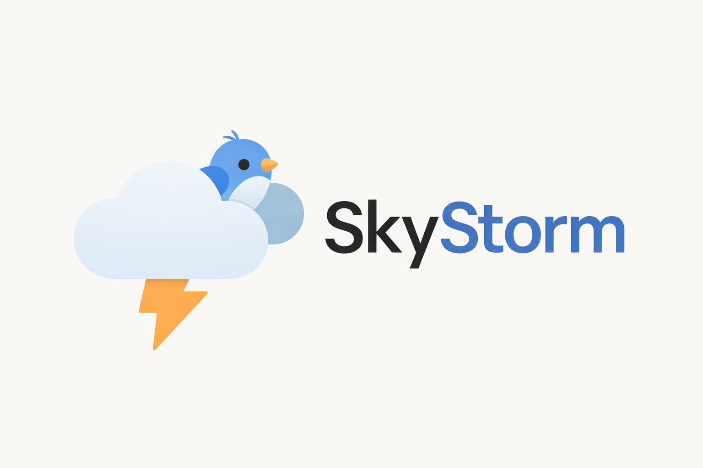
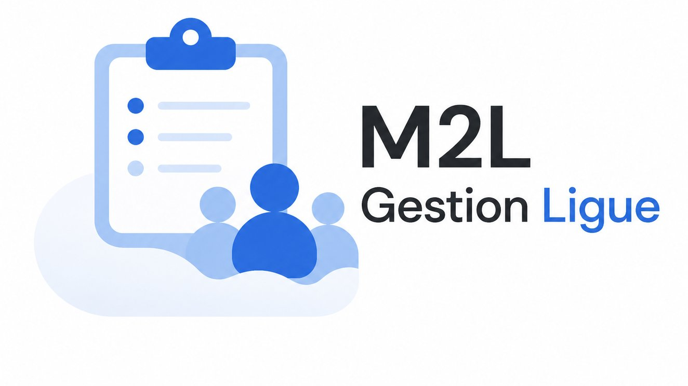

003 · Scolaire
Projets
scolaires.

PHP · Laravel 12 · MySQL
Skystorm
Application web de réseau social développée avec Laravel 12 — authentification, publication de posts, fil d'actualité et gestion des profils utilisateurs.
Voir le projet →

Java · MySQL · 3-tiers
Personnel M2L
Transformation d'une application mono-utilisateur en système multi-utilisateurs avec architecture 3-tiers, base de données MySQL et gestion des habilitations.
Voir le projet →
← Retour aux projets